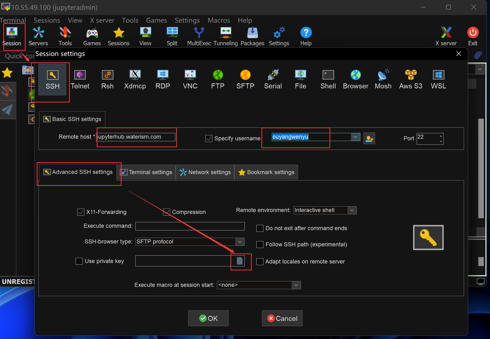
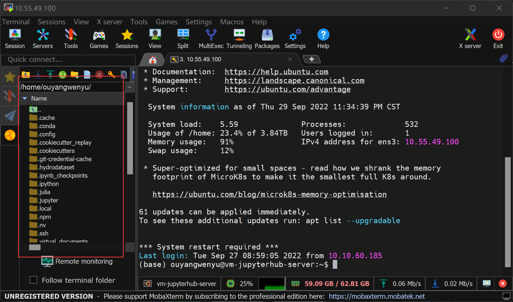

在平台上上传下载数据
Contents
在平台上上传下载数据#
前面的例子中我们使用的都是代码项目仓中本来就有的或平台预置好的数据，这一节让我们重点看看如果想自己上传一些数据到平台上使用，或者想下载一些数据到本地，应该怎么做。
1 在jupyterlab中下载上传文件#
先看看下载，直接右键一个或多个选中的文件

点击“Download”即可下载，如果是多个文件下载，浏览器会提醒你是否允许多个文件下载，允许它即可。
上传的操作更简单，直接将本地文件拖拽入上图所示的导航栏中即可。
2 文件夹多文件上传下载#
jupyterlab并不支持文件夹的上传下载，所以我们需要额外的工具来帮助我们和平台服务器之间建立能够传输文件夹的连接。
通过前面一系列的操作，我们都已经熟悉了在浏览器打开jupyterhub访问页面并进入我们个人的jupyterlab页面从而访问平台上提供的资源。现在我们看看使用SSH免密码的方式连接平台，这样除了浏览器提供的jupyterhub访问页面，我们还能使用mobaxterm、VSCode等工具从本地电脑连接到平台，就能利用这些工具实现一些jupyterhub不能提供的便利功能，例如这里谈论的批量文件上传下载等。VSCode我们后面介绍编程开发的时候还会用到，这里我们介绍Mobaxterm的使用。
2.1 通过SSH建立和平台的连接#
SSH是一种常用的加密通讯协议，可以简单理解为和用户名密码验证方式类似但加密方式不同的东西。如果有兴趣了解它可以看看这个科普小短文，我们这里简单科普下，不严谨，但是够用了。
现在我们需要两个电脑之间建立安全连接，一方是我们本地的电脑（以下称作客户端），一方是平台服务器（以下称作服务端）。在SSH下，我们需要在客户端通过终端调用一个现成的程序生成一对密钥，一个公钥一个私钥，公钥我们会交给服务端，私钥留在本地客户端用于后面连接时的配对验证。这样客户端向服务器端请求连接时，客户端私钥和服务器端公钥就会配对建立连接。
具体执行过程如下所示：
在本地电脑（以Windows为例）生成公钥和私钥。打开 cmd，输入
ssh-keygen -t rsa -C 你的github账号邮箱（连接到Github也需要SSH，生成一对key就行了，公钥可以复用），一路回车即可，自己记住自动生成的私钥 id_rsa 和公钥 id_rsa.pub 文件路径。公钥复制到JupyterHub服务器。登录平台 http://jupyterhub.waterism.com:666/ ，打开一个Terminal终端，新建目录
$ mkdir ~/.ssh/，然后编辑文件$ nano ~/.ssh/authorized_keys，将上一步生成的公钥 id_rsa.pub 文件用记事本打开，复制文件内容(ctrl+c和ctrl+v)到 authorized_keys 中即可，然后按 ctrl+x ，再按y，回车，保存退出即可。
这样我们就能通过SSH建立本地和平台之间的连接了。
2.2 用Mobaxterm从本地连接平台#
Mobaxterm是一个连接服务器常用的工具，它提供了良好的可视化界面来帮助我们浏览服务器上我们自己的文件，运行服务器上的一些程序等。
首先从官网下载这个软件：https://mobaxterm.mobatek.net/download-home-edition.html
Portable和Installer版本的任意一个均可，前者直接解压可以用，后者需要安装下。
安装成功后，打开这个软件，点击 Session -> SSH，在Remote host项中填写jupyterhub.waterism.com，Specify username（可选）输入登录名，就用你的jupyterhub账号名就行，然后选择 Advanced SSH settings，勾选 Use private key，选择第一步生成的私钥文件路径 id_rsa ，这样就配置完成了。

这时候应该能看到mobaxterm的左边栏有一个你刚刚配置好的连接，双击它，然后输入用户名，回车就会进入到如下图所示的界面了。

现在我们就可以通过拖拽本地文件夹到上图所示的左边栏里实现文件夹上传了，下载的话就右键目标文件夹点击下载就行，自己试试吧。